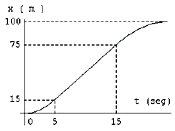

|
NO ME SALEN
PROBLEMAS RESUELTOS DE BIOFÍSICA DEL CBC
(Movimiento uniformemente variado)
|
|

|
| |

|
19) El gráfico representa en forma aproximada la
posición en función del tiempo para un corredor en
una carrera de 100 m. Analice el gráfico y
responda:
a) ¿Cuál es la velocidad máxima que
desarrolla?
b) ¿Se detiene al llegar a la meta?
c) Efectúe un gráfico aproximado
de
v = v (t).
Los tramos curvos son arcos de parábola.
La
curva pasa por el punto (0;0). |
 |
|
Tenés que acostumbrarte a hacer e interpretar gráficos. Para la cinemática constituyen una herramienta formidable. Este ejercicio, por ejemplo, podríamos resolverlo a la usanza normal (con las ecuaciones horarias), pero lo voy a resolver íntegramente con los gráficos.
Estos gráficos que te hice, por supuesto, en tándem, ya tienen colocados todos los datos y resultados que fui averiguando a lo largo del ejercicio. Vos ignoralos. Pensá que lo único que sabemos es lo que nos tira el gráfico posición-tiempo del enunciado. | | |
 |
Ahora fijate. Basándonos en el de posición, se construye el de velocidad-tiempo. El tramo A y el C son MRUV (dice el enunciado que las curvas son parábolas), y el tramo B es un MRU (hay que interpretar que la gráfica es una recta).
Cada tramo de movimiento define un área en ese gráfico, que representa al desplazamiento del tramo correspondiente: ΔXA = 15 m, ΔXB = 60 m y ΔXC = 25 m.
De ahí surge que la velocidad del tramo constante es vB = 6 m/s, ya que es la única manera de llegar a un rectángulo con un área de 60 m siendo que un lado vale 10s.
Del mismo modo sale el intervalo de tiempo del tramo C, que resulta ser de 8,33s. |
|
|
|
Tenés que tener en cuenta algunos detalles: la velocidad final de A y la inicial de C deben valer también 6 m/s, ya que nuestro universo no permite saltos de velocidad. La velocidad final de C debe valer 0 m/s, porque la gráfica de posición termina con una pendiente horizontal, una inclinación nula. Esta estimación "a ojo" no es muy segura, pero mi experiencia me indica que el autor del ejercicio pretendía justamente éso. No es un modo fehaciente de comunicar un dato, y estrictamente no deberíamos tenerlo en cuenta... pero en este caso es la única manera de resolver el ejercicio.
El valor de las aceleraciones ya podemos resolverlo mentalmente con sólo mirar el gráfico de velocidades.
aA = ΔvA/ ΔtA = 6 m/s/ 5 s = 1,2 m/s²
aC = ΔvC/ ΔtC = — 6 m/s/ 8,33 s = — 0,72 m/s²
Con esto termina el ejercicio, ya no quedan cosas por resolver. Te voy a escribir las ecuaciones horarias de cada tramo... para que tengas. |
|
|
| Tramo A, posición |
x = 0,6 m/s² . t ² |
| Tramo A, velocidad |
v = 1,2 m/s² . t |
| Tramo B, posición |
x = 15 m + 6 m/s . ( t – 5 s) |
| Tramo C, posición |
x = 75 m + 6 m/s ( t – 15 s) — 0,36 m/s² ( t – 15 s)² |
| Tramo C, velocidad |
v = 6 m/s — 0,72 m/s² ( t – 15 s) |
|
|
|
Miralas, analizalas... preguntate y contestate cómo hice para construirlas. |
|
 |
| Desafío: Hallar gráfica y analíticamente la posición y velocidad del móvil en los instantes 4, 10 y 20 segundos. |
|
| |
|
| Algunos derechos reservados.
Se permite su reproducción citando la fuente. Última actualización jul-08. Buenos Aires, Argentina. |
|
|
|
|
|
| |
|